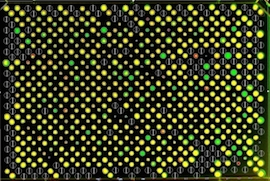
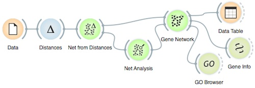
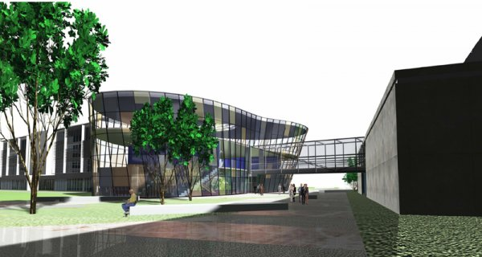

Background
Guest Lecturers
Hands-On Instructurs
Organisation
Program
Venue
Accommodation
Abstract Submissions
Software for Hands-On Workshop
Registration and Fee

The Functional Genomics Workshop will be held on Wednesday, October 15, and Thursday, October 16, 2014. The workshop is open to students, postdoctoral fellows and faculty members from Slovenia and other Central European countries, as well as participants of ISSY31 conference. The workshop will be about the techniques for large-scale functional genomics data generation and analysis. It will feature distinguished guest lecturers from the fields of yeast, C. elegans and mammalian cell genomics, whose laboratories have been spearheading the development of both experimental and computational analysis of biological networks. It will also include a hands-on course on computational and data mining approaches, and selected presentations of the research projects by the attendees. Informal discussions of all attendees with the lecturers will be encouraged.
The workshop will include hands-on part with practical exercises in computational approaches and data mining for functional genomics. Each attendee is expected to bring a laptop. Two weeks before the workshop we will send an email with installation instructions for the software and data sets that will be used at the workshop, and we will kindly ask the attendees to install the software prior to the workshop.
Prof. Brenda Andrews (University of Toronto; Director of the Donnelly centre for Cellular and Biomolecular Research)
Prof. Charlie Boone (University of Toronto)
Prof. Andy Fraser (University of Toronto)
Prof. Jason Moffat (University of Toronto)
Prof. Chad Myers (University of Minnesota)
Prof. Fritz Roth (University of Toronto)
Prof. Tomaž Curk (University of Ljubljana)
Prof. Janez Demsar (University of Ljubljana)
Dr. Mojca Mattiazzi Ušaj (University of Toronto and Jozef Stefan Institute)
Matej Ušaj (University of Toronto)
Prof. Blaž Zupan
(University of Ljubljana and Baylor College of Medicine)
Marinka Žitnik (University of Ljubljana)

The workshop is co-organized by the Donnelly Centre for Cellular and Biomolecular Research (CCBR) of the University of Toronto, Jožef Stefan Institute, Ljubljana, University of Ljubljana, and the Slovenian Biochemical Society.
Local organisers and workshop coordinators:
Prof. Uroš Petrovič (Jozef Stefan Institute)
Prof. Blaž Zupan (University of Ljubljana and Baylor College of Medicine)
Wednesday, October 15, 2014
| 9:00 | Welcome address |
| 9:15 | Charlie Boone: Global Genetic Interaction Networks |
| 10:15 | Coffee break & Orange Installation Clinic |
| 10:45 | Brenda Andrews: High throughput phenomics in budding yeast |
| 11:45 | Jason Moffat: The Hunt for Essential Genes and Genetic Interactions in Cancer Cells |
| 12:45 | Lunch break |
| 14:00 | Areejit Samal: Reconstruction and systems analysis of plant cell wall deconstruction network in filamentous fungus Neurospora crassa |
| 14:25 | Alenka Baruca Arbeiter: Development and characterization of novel microsatellite markers from ESTs of developing olive fruit (Olea europaea L.) |
| 14:50 | Ines Oršolić: The Role of Ribosomal Proteins L5 and L11 in Tumor Suppression |
| 15:15 | Marinka Žitnik: Biomedical Data Fusion |
| 15:40 | Coffee break & Orange Installation Clinic |
| 16:15 | Fritz Roth: Using yeast as a platform for assessing functionality of variation in human disease genes |
| 16:45 | Blaž Zupan & Janez Demšar: Data mining without programing - hands-on workshop (part 1, to 18:00) |
| 18:15 | Charlie Boone: Dinner intro |
| 18:20 | Dinner with fluffy shredded pancakes and sangria |
Thursday, October 16
| 9:00 | Andy Fraser: Why background matters - insights from RNAi and drug screens in C. elegans |
| 10:00 | Coffee break |
| 10:30 | Fritz Roth: Exploiting next-generation sequencing to map protein interactions |
| 11:30 | Chad Myers: Insights from mining large-scale genetic interaction networks in yeast |
| 12:30 | Lunch Break |
| 14:00 | Fritz Roth: Next-generation protein interaction mapping, and yeast as a platform for personal human genomics |
| 14:30 | Blaž Zupan & Janez Demšar & Tomaž Curk: Data mining without programing - hands-on workshop (part 2) |
| 15:30 | Coffee break |
| 16:00 | Blaž Zupan & Tomaž Curk: Data mining without programing - hands-on workshop (part 3) |
| 16:50 | Workshop wrap-up |
The workshop will take place in a newly-opened building of the Faculty of Computer and Information Science, University of Ljubljana, Večna pot 113, 1000 Ljubljana, Slovenia.

Ljubljana is one of the smallest European capitals and there are plenty hotels close to the center of the city that are also relatively close to the workshop venue. You will though need to use either a car, city public transport, or a taxi to reach the venue. The closest hotel is Four Points by Sheraton Ljubljana Mons, which is also within a walking distance (1.5 km).
In case you need any advice regarding the accommodation, please contact Uroš Petrovič.
We encourage students and post-docs who will attend the workshop to submit abstracts describing their own research work that is related to the topics of the workshop. The abstracts should be set in plain text and should include a title, a list of authors with affiliations and text of the abstract that should not exceed 500 words. We will select up to 10 abstracts for short presentation at the workshop.
Please email the abstract to Uroš Petrovič.
Submission deadline: August 31, 2014
All attendees need to register for the workshop and after the registration pay a workshop fee of 60 EUR. The enrollment will be limited to 100 attendees.
Bank address: Nova Ljubljanska banka d.d., Trg republike 2, 1520 Ljubljana
Account holder: Slovenian Biochemical Society, Jamova c. 39, 1000 Ljubljana
IBAN: SI56 0201 8001 8841 921
Swift/BIC: LJBASI2X
Purpose of the payment: FGW Ljubljana
Payment information should also include your name and affiliation
Contact person for registration is Ales Berlec.
Registrants for which we will not receiver proof of payments within two weeks after the registration will be removed from the registration list. You will receive a proof of payment of the workshop fee at the check-in on October 15.
Registration fee covers the workshop fee and on-site meals and refreshments (lunch and light dinner on October 15 and lunch on October 16).